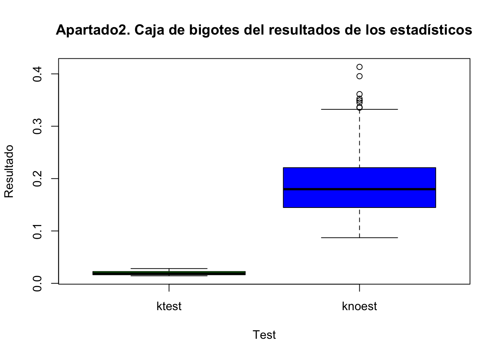
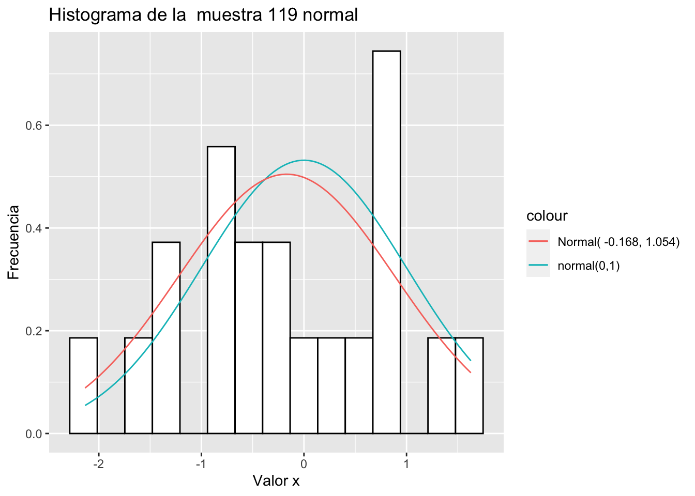
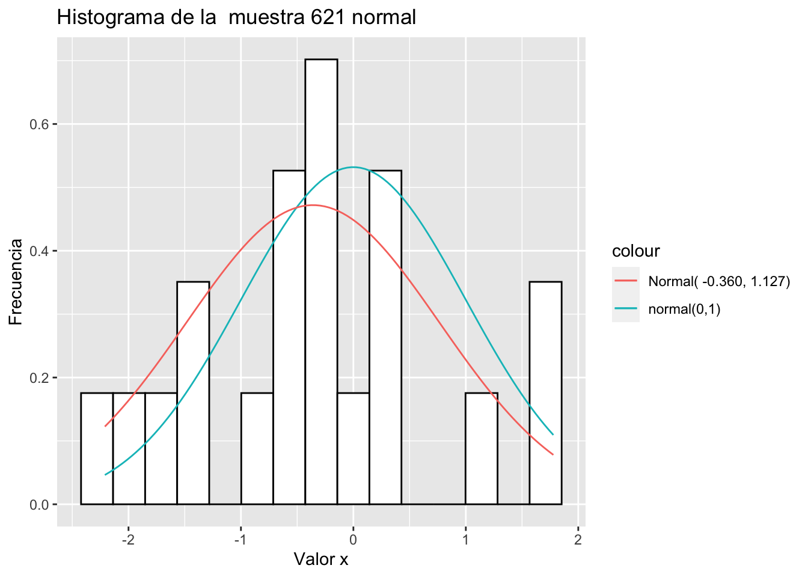

library(ggplot2)
library(purrr)
library(nortest) # Para ejemplo del Lillie test
set.seed(100)Ejercicio 5
La función (ksnoest) calcula el estadístico de Kolmogorov-Smirnov cuando estamos interesados en contrastar si nuestros datos siguen una distribución normal estándar:
ksnoest <- function(datos){
y <- ks.test(datos,pnorm)$statistic
return(y)
}Supongamos que queremos contrastar la hipótesis nula de que los datos son normales (con valores arbitrarios de la media y la desviación típica). Una posibilidad es estimar los parámetros de la normal y comparar la función de distribución empírica \(F_n\) con la función de distribución de una variable \(N(\hat \mu, \hat{\sigma}^2)\). La siguiente función calcula el correspondiente estadístico de Kolmogorov-Smirnov:
ksest <- function(datos){
mu <- mean(datos)
stdev <- sd(datos)
y <- ks.test(datos, pnorm, mean=mu, sd=stdev)$statistic
return(y)
}Apartado 1. Genera 1000 muestras de tamaño 20 y calcula ambos estadísticos (ksnoest y ksest) para cada una de ellas.
mean <- 0
sd <- 1
number_of_samples <- 1000
sample_size <- 20
samples <- matrix(
rnorm( number_of_samples * sample_size),#, mean=mean, sd= sd*),
nrow = number_of_samples
)
# Cálculo de ksnoest
knoest_results <- apply(X = samples,
MARGIN = 1, # rows 1, columns = 1
FUN = ksnoest
)
# Cálculo de ksest
kest_results <- apply(samples,1, ksest )Apartado 2. Mediante diagramas de cajas, compara las distribuciones de ambos estadísticos. ¿En cuál de los dos casos se obtienen en media valores menores? ¿Podrías dar una razón intuitiva?
Solución
boxplot(kest_results,knoest_results,
main = "Apartado2. Caja de bigotes del resultados de los estadísticos",
xlab = "Test",
ylab = "Resultado",
names = c("ktest", "knoest"),
col = c("green","blue ")
)
En boxplot la media viene indicada como la línea negra central, a la vista del gráfico en ktest (el verde) se obtiene una media menor.
La motivación de esto es la siguiente: de acorde a la documentación de R (ejecute help(ks.test)) el estadístico de test es
\[ D^+ = \max_u( F_x(u) - F_y(u)) \] Que en nuestro caso se corresponde con la diferencia entre la función de distribución empírica y la de una normal.
Por defecto, en knoest se está comparando con una normal de media \(0\) y desviación típica \(1\). Mientras que en ktest, la normal que se utiliza tiene como media la media y como desviación típica la calculada de la muestra. Al ser el tamaño de muestra relativamente pequeño, aunque los datos idealmente pertenecen a a una distribución de media cero y varianza 1, el error de la distribución empírica es menor con el de la distribución estimada.
Para ejemplificar lo dicho vamos a mostrar un histograma de los resultados, junto con dos funciones de probaibilidad, el de una normal de media cero y varianza 1 (la verde) y el de una normal de parámetros estimados con la muestra (curva naranja).
bins = 15
plot_hist_and_density <- function (index){
df <- data.frame(PF = samples[index,])
scale <- sample_size/bins
# get adapted norm
scaled_norm <- function (x) scale*dnorm(x)
scaled_norm_adapted <- function (x) scale*dnorm(x,mean = mean(df$PF), sd = sd(df$PF) )
title = sprintf("Normal( %.3f, %.3f)", mean(df$PF), sd(df$PF))
big_title = sprintf("Histograma de la muestra %i normal ", index)
ggplot(df, aes(x = PF)) +
ggtitle(big_title ) +
xlab("Valor x") + ylab("Frecuencia") +
geom_histogram(aes(y =..density..),
colour = "black",
fill = "white",
bins = bins) +
geom_function(aes(colour = "normal(0,1)"), fun = scaled_norm ) +
geom_function(aes(colour = title), fun = scaled_norm_adapted)
}number_of_plots = 2
map(sample(1:number_of_samples, number_of_plots), plot_hist_and_density)[[1]]
[[2]]
Apartado 3. Imagina que estimamos los parámetros y usamos las tablas de la distribución del estadístico de Kolmogorov-Smirnov para hacer el contraste a nivel \(\alpha\). El verdadero nivel de significación, ¿es mayor o menor que \(\alpha\)?
Solución
El nivel de significación \(\alpha\) es la probabilidad de rechazar la hipótesis nula siendo verdadera, será por lo general menor, porque nosotros estamos suponiendo que es igual a una normal de media y varianza estimadas; que son diferentes a los parámetros ideales desconocidos.
Como ejemplo de cómo efecta la estimación de parámetros mostraré cómo varía el p-valor;
la probabilidad de aceptar la hipótesis nula cuando esta es verdadera. Por la misma explicación anterior, ahora para los parámetros estimados el p-valor debería de ser mayor que para los fijos ideales. Este valor es uno de los atributos de ks.test.
ksnoest_alpha <- function(datos){
p_value <- ks.test(datos,pnorm)$p
return(p_value)
}
ksest_alpha <- function(datos){
mu <- mean(datos)
stdev <- sd(datos)
p_value <- ks.test(datos, pnorm, mean=mu, sd=stdev)$p
return(p_value)
}
significacion_sin_estimar <- mean(apply(samples, 2, ksnoest_alpha))
significacion_estimada <- mean(apply(samples, 2,ksest_alpha))
sprintf('La media del (para ksnoest) sin estimar los parámetros es %.4f.', significacion_sin_estimar)[1] "La media del (para ksnoest) sin estimar los parámetros es 0.5682."sprintf('La media de del p para ksest es: %.4f.', significacion_estimada)[1] "La media de del p para ksest es: 0.7906."Podemos observar como para parámetro estimado es menor en nuestro caso.
Apartado 4. Para resolver el problema se ha estudiado la distribución en el caso de muestras normales con parámetros estimados. Es lo que se conoce como contraste de normalidad de Kolmogorov-Smirnov-Lilliefors (KSL). Según la tabla del estadístico KSL, el nivel crítico para \(\alpha = 0.05\) y \(n = 20\) es \(0.190\). Esto significa que el porcentaje de valores de ksest mayores que \(0.19\) en nuestra simulación debe ser aproximadamente del 5%. Compruébalo a partir de los resultados de los apartados anteriores.
Solución
nivel_critico <- 0.19
# Sacamos en una lista los mayores
numero_de_mayores <- length(kest_results[kest_results > nivel_critico])
porcentaje <- 100 * numero_de_mayores / number_of_samples
cat('El porcentaje de mayores es un ', porcentaje, '%' )El porcentaje de mayores es un 5.2 %# Podemos comprobar el p valor además haciendo
lillie.test(samples)
Lilliefors (Kolmogorov-Smirnov) normality test
data: samples
D = 0.0041207, p-value = 0.5647Apartado 5. Haz una pequeña simulación para aproximar el nivel de significación del contraste KSL cuando se utiliza un valor crítico 0.12 para muestras de tamaño 40.
Solución
Planteamiento de la simulación. Para aproximar el nivel de significación lo que haremos será generar number_of_samples <- 1000 muestras de tamaño sample_size <- 40. Calcularemos el porcentaje esas muestras se quedan por encima del valor crítico nivel_critico <- 0.12
# Parámetros
nivel_critico <- 0.120
number_of_samples <- 1000
sample_size <- 40
times_repeating_experiment = 50
# Variables auxiliares
porcentaje <- NULL
for(i in 1:times_repeating_experiment){
samples <- matrix(
rnorm( number_of_samples * sample_size),
nrow = number_of_samples
)
kest_results <- apply(samples,1, ksest)
numero_de_mayores <- length(kest_results[kest_results > nivel_critico])
porcentaje <- rbind(porcentaje,numero_de_mayores / number_of_samples)
}
cat('El porcentaje de mayores es de media', mean(porcentaje)*100, '%')El porcentaje de mayores es de media 15.084 %cat('\nEs decir alpha es approximadamente ',mean(porcentaje), ' +-', sd(porcentaje))
Es decir alpha es approximadamente 0.15084 +- 0.01225305Si observamos la tablas de KOLMOGOROV‐SMIRNOV, para \(n=40\) y nivel crítico \(0.1204\) se tiene que \(\alpha = 0.15\).